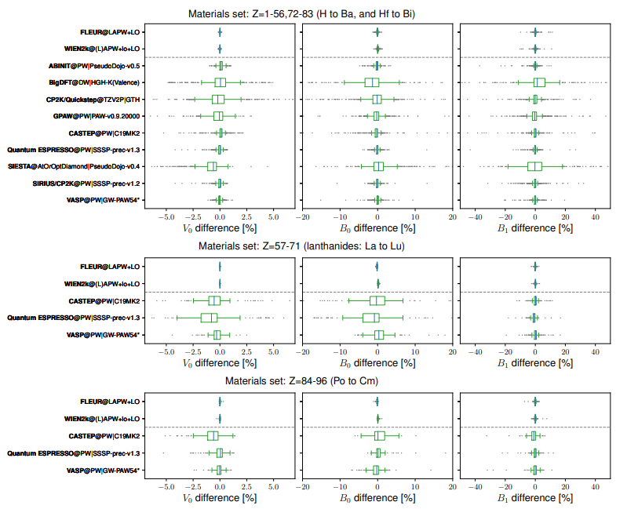

論文タイトル一覧
1. ファンデルワールス準結晶の超伝導性
・反応焼結法で作製したタンタルテルル化合物のファンデルワールス準結晶（dd-QC）において、室温と常圧で電気抵抗がなくなる超伝導性を発見した。
電気抵抗、磁化率、比熱の測定から、dd-QCの超伝導転移温度は約1 Kであり、体積分率は約100%であることを確認した。これは、熱力学的に安定な準結晶で初めて観測された超伝導性である。
dd-QCの上部臨界磁場は、汚れ限界におけるWHH理論と一致し、T = 0で32 kOeと推定された。電子-フォノン結合定数は0.52と小さく、弱結合超伝導性を示した。
ファンデルワールス準結晶や二次元準結晶の物理的性質や、準結晶に期待される非常に特異な超伝導性をさらに調べることが可能になった。
電気抵抗、磁化率、比熱の測定から、dd-QCの超伝導転移温度は約1 Kであり、体積分率は約100%であることを確認した。これは、熱力学的に安定な準結晶で初めて観測された超伝導性である。
dd-QCの上部臨界磁場は、汚れ限界におけるWHH理論と一致し、T = 0で32 kOeと推定された。電子-フォノン結合定数は0.52と小さく、弱結合超伝導性を示した。
ファンデルワールス準結晶や二次元準結晶の物理的性質や、準結晶に期待される非常に特異な超伝導性をさらに調べることが可能になった。
コメント：準結晶でファンデルワールス結晶で超伝導とは、なんてキャッチーな論文だ。
DATE: 20 Jul 2023
Superconductivity in a van der Waals layered quasicrystal
Yuki Tokumoto et al. (The University of Tokyo, Japan)
arXiv:2307.10679 (cond-mat)
Superconductivity in a van der Waals layered quasicrystal
Yuki Tokumoto et al. (The University of Tokyo, Japan)
arXiv:2307.10679 (cond-mat)

2. 固体の密度汎関数理論計算の精度を検証するための再現可能で普遍的なワークフローの開発
・固体の物性を予測するために広く使われている密度汎関数理論（DFT）計算の精度を検証するために、960種類の結晶構造に対して全電子（AE）計算と擬ポテンシャル（PP）計算を比較した。
・AE計算はWIEN2kとFLEURという二つのコードを用いて行い、PP計算はABINIT, BigDFT, CASTEP, CP2K, GPAW, Quantum ESPRESSO, SIESTA, SIRIUS/CP2K, VASPという九つのコードを用いて行った。
・各コードで同じ結晶構造に対して等方的な圧縮・膨張をかけてエネルギーを計算し、平衡体積（V0）、体積変化率（B0）、体積変化率の圧力微分係数（B1）という三つの熱力学的パラメータをフィッティングで求めた。
・各コードの結果とAE計算の平均値との相対誤差（ε）と不均一度（ν）という二つの指標を定義し、各コードの精度と一貫性を定量的に評価した。また、PP計算の精度を向上させるために、いくつかの元素に対して新しいPPを生成した。
・この研究はDFT計算における数値的な不確実性を制御するために重要な貢献をしている。多くのコードとPPライブラリを比較し、再現可能で普遍的なワークフローを提供している。
・この研究はEOSだけでなく、他の物性や交換相関汎関数に対しても同様な検証を行うことを推奨している。また、最適な精度と計算コストのバランスを見極めるために、新しいプロトコルや指標を開発することも提案している。
・AE計算はWIEN2kとFLEURという二つのコードを用いて行い、PP計算はABINIT, BigDFT, CASTEP, CP2K, GPAW, Quantum ESPRESSO, SIESTA, SIRIUS/CP2K, VASPという九つのコードを用いて行った。
・各コードで同じ結晶構造に対して等方的な圧縮・膨張をかけてエネルギーを計算し、平衡体積（V0）、体積変化率（B0）、体積変化率の圧力微分係数（B1）という三つの熱力学的パラメータをフィッティングで求めた。
・各コードの結果とAE計算の平均値との相対誤差（ε）と不均一度（ν）という二つの指標を定義し、各コードの精度と一貫性を定量的に評価した。また、PP計算の精度を向上させるために、いくつかの元素に対して新しいPPを生成した。
・この研究はDFT計算における数値的な不確実性を制御するために重要な貢献をしている。多くのコードとPPライブラリを比較し、再現可能で普遍的なワークフローを提供している。
・この研究はEOSだけでなく、他の物性や交換相関汎関数に対しても同様な検証を行うことを推奨している。また、最適な精度と計算コストのバランスを見極めるために、新しいプロトコルや指標を開発することも提案している。
コメント：DFT計算に用いられるツールも近似法も乱立して専門家でないと追いきれない。客観的にそれらを比較することができる点が素晴らしい。
DATE: 26 May 2023
How to verify the precision of density-functional-theory implementations via reproducible and universal workflows
Emanuele Bosoni et al. (Institut de Ciencia de Materials de Barcelona, Spain)
arXiv:2305.17274 (cond-mat.mtrl-sci)
How to verify the precision of density-functional-theory implementations via reproducible and universal workflows
Emanuele Bosoni et al. (Institut de Ciencia de Materials de Barcelona, Spain)
arXiv:2305.17274 (cond-mat.mtrl-sci)


3. パインズの悪魔の発見：Sr2RuO4における3次元音響プラズモンの観測
・Sr2RuO4は、電子密度の量子化された集団振動であるプラズモンと、異なるバンドの電子が逆位相で動くことで電荷が中性になるデーモンという2種類の集団励起モードを持つことを理論的に予測した。
・デーモンは、光と結合しないため、非ゼロの運動量で電子エネルギー損失分光法（EELS）を用いて検出することができる。
・Sr2RuO4のEELS測定から、デーモンの存在を実験的に確認した。デーモンは、エネルギーギャップが小さく、運動量に対して線形に分散し、強度がq−1.8というべき乗則に従うことから、中性で音響的な性質を持つことが分かった。
・デーモンは、1956年にPinesによって予想されたが、3次元金属で観測されたのは今回が初めてである。デーモンは、多バンド金属の低エネルギー物理や超伝導性などに重要な役割を果たす可能性がある。
・デーモンは、光と結合しないため、非ゼロの運動量で電子エネルギー損失分光法（EELS）を用いて検出することができる。
・Sr2RuO4のEELS測定から、デーモンの存在を実験的に確認した。デーモンは、エネルギーギャップが小さく、運動量に対して線形に分散し、強度がq−1.8というべき乗則に従うことから、中性で音響的な性質を持つことが分かった。
・デーモンは、1956年にPinesによって予想されたが、3次元金属で観測されたのは今回が初めてである。デーモンは、多バンド金属の低エネルギー物理や超伝導性などに重要な役割を果たす可能性がある。
コメント：電子が結合して、質量がなく、電気的に中性で、光と相互作用しない複合粒子を形成できるとパインズが予測した。説明から察するに複数の電子間での相殺で上記要件を満たしているようだが、それはパインズの予測の範疇なのだろうか。マヨナラ粒子もモノポールもしかり、理論予測を実験的に証明することは、物理学の一番の面白さなのだと思う。
関連記事：京都大学プレスリリース（10 Aug 2023）Sr2RuO4での「パインズの悪魔」の観測 67年前に予言された金属の奇妙な振る舞いの発見
補足：Sr2RuO4は、非従来型の超伝導体であり、スピン三重項状態という特異な秩序パラメーターの対称性を持つと考えられている。スピン三重項超伝導体では、電子のスピンが反平行ではなく平行になることで、磁場に対して強い超伝導性を示す可能性がある。Sr2RuO4は、電子密度の量子化された集団振動であるプラズモンと、異なるバンドの電子が逆位相で動くことで電荷が中性になるデーモンという2種類の集団励起モードを持つことが理論的に予測されている。デーモンは、光と結合しないため、非ゼロの運動量で電子エネルギー損失分光法（EELS）を用いて検出することができる。デーモンは、1956年にPinesによって予想されたが、3次元金属で観測されたのは今回が初めてである。デーモンは、多バンド金属の低エネルギー物理や超伝導性などに重要な役割を果たす可能性がある。
関連記事：京都大学プレスリリース（10 Aug 2023）Sr2RuO4での「パインズの悪魔」の観測 67年前に予言された金属の奇妙な振る舞いの発見
補足：Sr2RuO4は、非従来型の超伝導体であり、スピン三重項状態という特異な秩序パラメーターの対称性を持つと考えられている。スピン三重項超伝導体では、電子のスピンが反平行ではなく平行になることで、磁場に対して強い超伝導性を示す可能性がある。Sr2RuO4は、電子密度の量子化された集団振動であるプラズモンと、異なるバンドの電子が逆位相で動くことで電荷が中性になるデーモンという2種類の集団励起モードを持つことが理論的に予測されている。デーモンは、光と結合しないため、非ゼロの運動量で電子エネルギー損失分光法（EELS）を用いて検出することができる。デーモンは、1956年にPinesによって予想されたが、3次元金属で観測されたのは今回が初めてである。デーモンは、多バンド金属の低エネルギー物理や超伝導性などに重要な役割を果たす可能性がある。
DATE: 09 Aug 2023
Pines’ demon observed as a 3D acoustic plasmon in Sr2RuO4
Ali A. Husain et al. (University of Illinois, Urbana, IL, USA)
Nature:s41586-023-06318-8 (article)
Pines’ demon observed as a 3D acoustic plasmon in Sr2RuO4
Ali A. Husain et al. (University of Illinois, Urbana, IL, USA)
Nature:s41586-023-06318-8 (article)

4. WIEN2k: 固体の物性を計算するためのAPW+loプログラム
・WIEN2kは、密度汎関数理論のコーン・シャム方程式を解くために、増強平面波プラス局所軌道（APW+lo）法を用いるプログラムである。APW+lo法は、全電子（コアと価電子）を全ポテンシャルで自己無撞着に扱う方法であり、WIEN2kでは、並列化や最適化された数値ライブラリを利用することで非常に効率的に実装されている。
・WIEN2kでは、基本的な物性（電子バンド構造や原子構造の最適化など）から、より専門的な物性（核磁気共鳴遮蔽テンソルや電気分極など）まで、多くの物性を計算することができる。APW+lo法の簡単な紹介の後、WIEN2k（バージョン19）の使用法、能力、特徴について詳しくレビューしている。
・WIEN2kでは、交換相関関数として様々なオプションや近似が利用できる。また、外部のライブラリやプログラムと連携することも可能である。関連する応用例やいくつかの例題も紹介している。
・WIEN2kは、3つのモード（バランス、クリエイティブ、プレシジョン）で利用できる。各モードでは、計算精度や速度、メモリ使用量などが異なる。ユーザーはトグルボタンでモードを切り替えることができる。新しいモードに切り替えると、新しい会話が始まる。
・WIEN2kは、マークダウンレンダリング要素を利用して、情報を視覚的に魅力的に提示することができる。例えば、見出しや表、箇条書きリストなどを使って文章を構成したり、コードブロックを使って詩やコード、歌詞などを整形したりすることができる。
・WIEN2kでは、基本的な物性（電子バンド構造や原子構造の最適化など）から、より専門的な物性（核磁気共鳴遮蔽テンソルや電気分極など）まで、多くの物性を計算することができる。APW+lo法の簡単な紹介の後、WIEN2k（バージョン19）の使用法、能力、特徴について詳しくレビューしている。
・WIEN2kでは、交換相関関数として様々なオプションや近似が利用できる。また、外部のライブラリやプログラムと連携することも可能である。関連する応用例やいくつかの例題も紹介している。
・WIEN2kは、3つのモード（バランス、クリエイティブ、プレシジョン）で利用できる。各モードでは、計算精度や速度、メモリ使用量などが異なる。ユーザーはトグルボタンでモードを切り替えることができる。新しいモードに切り替えると、新しい会話が始まる。
・WIEN2kは、マークダウンレンダリング要素を利用して、情報を視覚的に魅力的に提示することができる。例えば、見出しや表、箇条書きリストなどを使って文章を構成したり、コードブロックを使って詩やコード、歌詞などを整形したりすることができる。
コメント：DFT計算ソフト野中で最も計算精度が高いと言われているソフトウェア。アカデミック版が400ユーロなので、お金のない若手研究者でも購入できるコスパの高い代物だ。多数の機能が備わり、更新されているので、いじり倒せるくらい時間を取りたいものだ。
関連記事：WIEN2k_23.2
補足1：原子球と格子間領域に分割されたユニットセル内で、異なる基底関数を用いる。原子球内では、動径波動関数と球面調和関数の積の線形結合を用いる。格子間領域では、平面波基底を用いる。動径波動関数は、エネルギーと原子球内のポテンシャルの球対称部分をもつ動径シュレーディンガー方程式の正則解とそのエネルギー微分の線形結合で表す。これは、線形化補強平面波（LAPW）法と呼ばれる。LAPW法の柔軟性を高めるために、ローカルオービタル（LO）と呼ばれる基底関数を追加することができる。LOは、異なる2つのエネルギーによる2つの動径波動関数と1つの動径波動関数のエネルギー微分の線形結合で表される。さらに、原子球面上で平面波の値と傾きをそろえるという制約を取り除くことで、計算効率を改善することができる。これは、APW+lo法と呼ばれる。APW+lo法では、原子球内ではエネルギーが固定された動径波動関数を用いる。また、原子球の境界にキンクを持つ基底関数（lo）を追加する。
補足2：ローカル密度近似（LDA）: 交換相関エネルギーを電子密度の局所的な値に依存させる最も単純な近似です。WIEN2kでは、Ceperley-Alder（CA）パラメータ化やPerdew-Zunger（PZ）パラメータ化などが選択できます。一般化勾配近似（GGA）: 交換相関エネルギーを電子密度の局所的な値とその勾配に依存させる近似です。WIEN2kでは、Perdew-Burke-Ernzerhof（PBE）やPerdew-Wang（PW91）などが選択できます。メタGGA: 交換相関エネルギーを電子密度の局所的な値とその勾配とキネティックエネルギー密度に依存させる近似です。WIEN2kでは、Tao-Perdew-Staroverov-Scuseria（TPSS）やTran-Blaha（TB09）などが選択できます。混合型汎関数: 交換相関エネルギーの一部を厳密なハートリーフォック交換エネルギーで置き換える方法です。WIEN2kでは、Becke-Lee-Yang-Parr（BLYP）、Becke-Perdew（BP86）、Becke-Half-and-Half（BHH）、Perdew-Burke-Ernzerhof0（PBE0）、Heyd-Scuseria-Ernzerhof（HSE）などが選択できます。ハイブリッド型汎関数: 交換相関エネルギーの一部をスクリーニングされたクーロンポテンシャルで重み付けしたハートリーフォック交換エネルギーで置き換える方法です。WIEN2kでは、Heyd-Scuseria-Ernzerhofスクリーニング付き（HSEsol）、Heyd-Scuseria-Ernzerhof長距離補正付き（HSELR）、eyd-Scuseria-Ernzerhof短距離補正付き（HSESR）などが選択できます。
関連記事：WIEN2k_23.2
補足1：原子球と格子間領域に分割されたユニットセル内で、異なる基底関数を用いる。原子球内では、動径波動関数と球面調和関数の積の線形結合を用いる。格子間領域では、平面波基底を用いる。動径波動関数は、エネルギーと原子球内のポテンシャルの球対称部分をもつ動径シュレーディンガー方程式の正則解とそのエネルギー微分の線形結合で表す。これは、線形化補強平面波（LAPW）法と呼ばれる。LAPW法の柔軟性を高めるために、ローカルオービタル（LO）と呼ばれる基底関数を追加することができる。LOは、異なる2つのエネルギーによる2つの動径波動関数と1つの動径波動関数のエネルギー微分の線形結合で表される。さらに、原子球面上で平面波の値と傾きをそろえるという制約を取り除くことで、計算効率を改善することができる。これは、APW+lo法と呼ばれる。APW+lo法では、原子球内ではエネルギーが固定された動径波動関数を用いる。また、原子球の境界にキンクを持つ基底関数（lo）を追加する。
補足2：ローカル密度近似（LDA）: 交換相関エネルギーを電子密度の局所的な値に依存させる最も単純な近似です。WIEN2kでは、Ceperley-Alder（CA）パラメータ化やPerdew-Zunger（PZ）パラメータ化などが選択できます。一般化勾配近似（GGA）: 交換相関エネルギーを電子密度の局所的な値とその勾配に依存させる近似です。WIEN2kでは、Perdew-Burke-Ernzerhof（PBE）やPerdew-Wang（PW91）などが選択できます。メタGGA: 交換相関エネルギーを電子密度の局所的な値とその勾配とキネティックエネルギー密度に依存させる近似です。WIEN2kでは、Tao-Perdew-Staroverov-Scuseria（TPSS）やTran-Blaha（TB09）などが選択できます。混合型汎関数: 交換相関エネルギーの一部を厳密なハートリーフォック交換エネルギーで置き換える方法です。WIEN2kでは、Becke-Lee-Yang-Parr（BLYP）、Becke-Perdew（BP86）、Becke-Half-and-Half（BHH）、Perdew-Burke-Ernzerhof0（PBE0）、Heyd-Scuseria-Ernzerhof（HSE）などが選択できます。ハイブリッド型汎関数: 交換相関エネルギーの一部をスクリーニングされたクーロンポテンシャルで重み付けしたハートリーフォック交換エネルギーで置き換える方法です。WIEN2kでは、Heyd-Scuseria-Ernzerhofスクリーニング付き（HSEsol）、Heyd-Scuseria-Ernzerhof長距離補正付き（HSELR）、eyd-Scuseria-Ernzerhof短距離補正付き（HSESR）などが選択できます。
DATE: 19 Feb 2020
WIEN2k: An APW+lo program for calculating the properties of solids
Peter Blaha et al. (Vienna University of Technology, Austria)
J. Chem. Phys. 152, 074101 (2020)
WIEN2k: An APW+lo program for calculating the properties of solids
Peter Blaha et al. (Vienna University of Technology, Austria)
J. Chem. Phys. 152, 074101 (2020)

5. 室温常圧で超伝導を実現したCo2MnAl1−xSixウェイル半金属の電子構造と熱電特性の組み合わせ的調整
・Co2MnAl1−xSix (CMAS)は、AlとSiの置換によってフェルミ準位を連続的に調整できるウェイル半金属である。
CMASの組成勾配薄膜を層状に堆積することで、一枚の薄膜上でxが0から1まで変化する単結晶薄膜を作製した。 硬X線光電子分光法により、CMAからCMSへの組成変化に伴ってフェルミ準位が0.40 eVシフトすることを直接確認した。
電気抵抗、異常ホール効果、異常ネルンスト効果、ゼーベック効果などの輸送特性と熱電特性を系統的に測定した。
ロックインサーモグラフィー法を用いて、異常エッティングスハウゼン効果（異常ネルンスト効果の逆効果）の組成依存性を高速かつ正確に評価した。
CMASの組成勾配薄膜を層状に堆積することで、一枚の薄膜上でxが0から1まで変化する単結晶薄膜を作製した。 硬X線光電子分光法により、CMAからCMSへの組成変化に伴ってフェルミ準位が0.40 eVシフトすることを直接確認した。
電気抵抗、異常ホール効果、異常ネルンスト効果、ゼーベック効果などの輸送特性と熱電特性を系統的に測定した。
ロックインサーモグラフィー法を用いて、異常エッティングスハウゼン効果（異常ネルンスト効果の逆効果）の組成依存性を高速かつ正確に評価した。
コメント：XRD測定からホイスラー合金の超格子構造とその他輸送・熱電特性評価からAlとSiの置換効果を明らかにしている。ホイスラー合金はX2YZやXYZの多元系合金であり、その組成組み合わせをコンビ成膜とハイスループット評価を行うのは非常にコスパがいい。
関連記事：
補足1：ワイル半金属とは、場の量子論や標準模型において重要な役割を果たしている質量のないカイラルフェルミオンである。ワイル半金属は、その低エネルギー励起が室温であっても電荷を運ぶワイルフェルミオンである固体結晶であり2、トポロジカルな表面フェルミアークを示すことが期待される。ワイル半金属は、電子工学やコンピューティングにおいて高い移動度や光から電気への変換効率などの応用が見込まれる。
補足2：組み合わせ的堆積法：異なる組成の薄膜を層状に堆積することで、一枚の薄膜上で組成が変化する単結晶薄膜を作製する方法である。CMASの組成勾配薄膜は、この方法を用いて作製された。ロックインサーモグラフィー法：交流磁場下で温度変化を高感度カメラで撮影することで、異常エッティングスハウゼン効果（異常ネルンスト効果の逆効果）の組成依存性を高速かつ正確に評価する方法である。CMASの熱電特性の測定に用いられた。
関連記事：
補足1：ワイル半金属とは、場の量子論や標準模型において重要な役割を果たしている質量のないカイラルフェルミオンである。ワイル半金属は、その低エネルギー励起が室温であっても電荷を運ぶワイルフェルミオンである固体結晶であり2、トポロジカルな表面フェルミアークを示すことが期待される。ワイル半金属は、電子工学やコンピューティングにおいて高い移動度や光から電気への変換効率などの応用が見込まれる。
補足2：組み合わせ的堆積法：異なる組成の薄膜を層状に堆積することで、一枚の薄膜上で組成が変化する単結晶薄膜を作製する方法である。CMASの組成勾配薄膜は、この方法を用いて作製された。ロックインサーモグラフィー法：交流磁場下で温度変化を高感度カメラで撮影することで、異常エッティングスハウゼン効果（異常ネルンスト効果の逆効果）の組成依存性を高速かつ正確に評価する方法である。CMASの熱電特性の測定に用いられた。
DATE: 9 Mar 2021
Combinatorial tuning of electronic structure and thermoelectric properties in Co2MnAl1−xSix Weyl semimetals
Peter Blaha et al. (Vienna University of Technology, Austria)
APL Mater 9, 031105 (2021)
Combinatorial tuning of electronic structure and thermoelectric properties in Co2MnAl1−xSix Weyl semimetals
Peter Blaha et al. (Vienna University of Technology, Austria)
APL Mater 9, 031105 (2021)